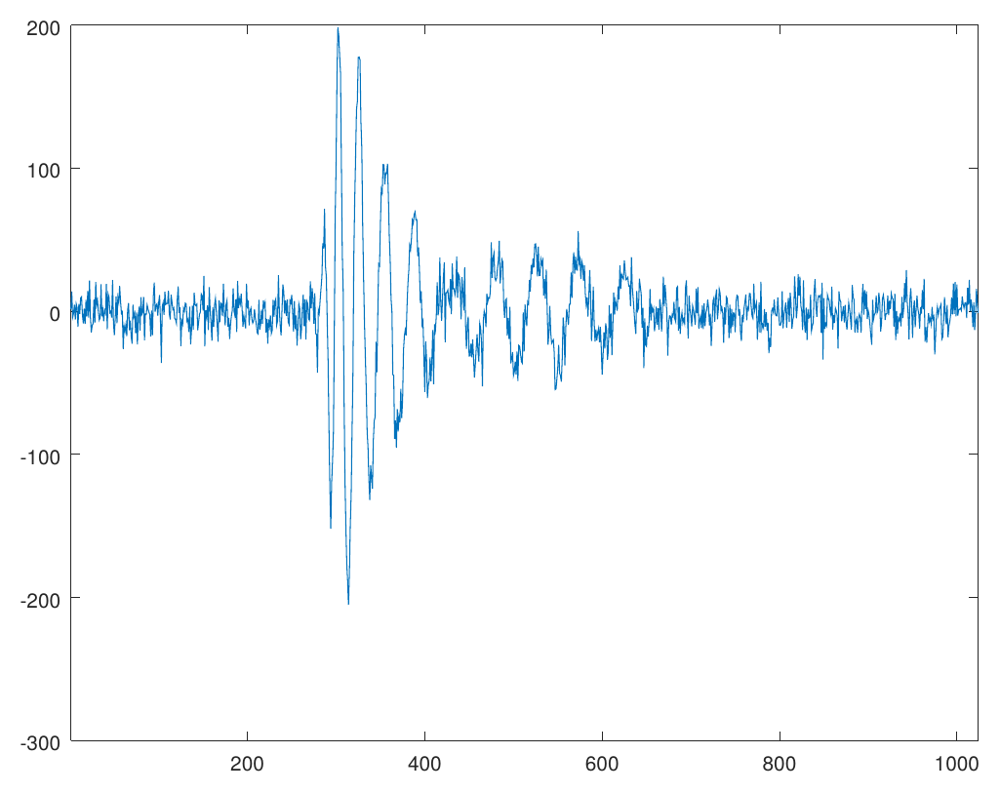
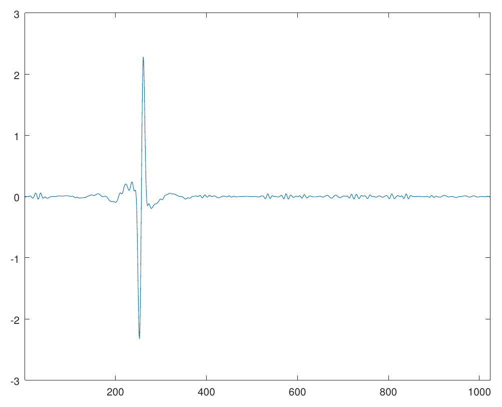

Debdeep Bhattacharya

Research Interests
I enjoy problems with a good mix of abstraction and applicability. I work on a variety of problems coming from
- nonlinear dispersive partial differential equations
- signal processing
- solid mechanics
- machine learning
Nonlinear Dispersive Equations
Dispersive equations model the propagation of waves in various media. Nonlinearities make the study of dispersive equations more realistic, as well as mathematically interesting. For example, when the effect of nonliearity opposes the effect of dispersion (defocusing case), these equations exhibit peculiar solutions called solitons that retain their spacial localization for a long time. John Scott Russell observed such a solitary-wave in a shallow river in 1834. Here is an experiment.
My work on nonlinear dispersive equations has been about the low-regularity theory, especially in the critical regime, where we can observe a dichotomy between global existence and blow-up of the solution, depending on the mass of the initial data. With my advisor Svetlana Roudenko and collaborator Luiz Gustovo Farah, I have studied the Zakharov-Kuznetsov equation
and its modifications, which model ion-accoustic wave propagation in magnetized plasma. It is also a generalization of the celebrated Korteweg-de Vries equation for shallow water waves.
The study of global well-posedness of low-regularity data requires the careful investigation of the interaction of constituent frequencies of the solution, together with tools from Harmonic analysis such as Fourier analysis and Paley-Littlewood analysis – a technique collectively known as the I-method. On the other hand, low-regularity solutions that blow up in finite time have the property that the mass concentrates inside a ball of shrinking radius. The main tools here are the I-method and profile decomposition.
- Global well-posedness for low regularity data in the 2d modified Zakharov-Kuznetsov equation with Luiz Gustovo Farah and Svetlana Roudenko (Submitted) (arXiv)
- Mass concentration of $H^s$ blowup solution to 2D modified Zakharov-Kuznetsov equation with Luiz Gustavo Farah (In preparation)
Signal Processing
Even though I was first exposed to Harmonic analysis as a tool to study dispersive equations, I became interested in its application in other areas of science, in particular signal processing, when I took a class on frames, wavelets, time series analysis and compressed sensing by John Benedetto.
During Summer 2018, I had the opportunity to work with the ANITA collaboration, a research group conducting balloon experiments in the antarctic region with a goal to detect ultra-high energy neutrinos. Filtering out electro-magnetic noises picked up by the highly sensitive antennas of ANITA payload and de-blurring the signals is known as the deconvolution problem in signal processing. I worked with the astrophysicists at the University of Hawaii under the supervision of Peter Gorham on the deconvolution problem using Fourier and Wavelet analysis and implemented a C++ library called libWTools. I am currently working on a multi-antenna generalization of this algorithm.
- Report on Deconvolution problem and application to ANITA signals, submitted to ANITA collaboration at University of Hawai’i at Manoa (link)
- Generalized ForWaRD algorithm for multi-antenna model (Preprint)
|  |  |
A noisy blurred signal (left) is deconvolved (right) using the ForWaRD algorithm
Solid Mechanics
Understanding how solid materials deform and fail under external loading conditions has been a long-standing area of research for scientists and engineers for centuries. The classical approach is to treat the solids as a continuum and model the displacements of material points as a solution to a differential equation, known as the Cauchy Momentum equation. However, due to the differential formulation, the classical theory fails to describe material behavior when the deformation field is non-differentiable at certain material points, for example, when a fracture is formed.
Introduced by Stewart Silling in 2000, peridynamics has become useful to address this limitations. Peridynamics assumes that every material point interacts with its neighbors via a bond force and reformulates material deformation using an integral equation, thus accommodating discontinuous deformations, such as fractures. Peridynamics has been used to model crack formation and crack branching, among many other fracture problems.
 Simulation of crack propagation and branching in soda-lime glass with a pre-notch under external force in the outward vertical direction [code]
Simulation of crack propagation and branching in soda-lime glass with a pre-notch under external force in the outward vertical direction [code]
Working with Pablo Seleson and Jeremy Trageser at the Oak Ridge National Laboratory, I considered three-dimensional axisymmetric problems, where the geometry of the material is symmetric about an axis of symmetry and the external loading conditions are such that the deformation fields are symmetric about the same axis of symmetry. This is an important class of problem in solid mechanics where the symmetry can be exploited to reduce dimension of the problem. We derived the two-dimensional model that exactly represent the full 3D axisymmetric linear peridynamic model by incorporating out-of-plane bond forces into the representative 2D plane, thus reducing the computational cost significantly.
- Report on Reduction of three-dimensional axisymmetric problems to two dimensions in Peridynamics, submitted to the NSF as part of MSGI program (link)
- Reduction of three-dimensional axisymmetric problems to two dimensions in Peridynamics with Pablo Seleson and Jeremy Trageser (Preprint)
Machine Learning
During Summer 2018, I was learning to use popular machine lerning techniques using scikit-learn as yet another problem-solving tool. While documenting my understanding, I became more interested in the underlying mathematics of it. With Radu Balan and Naveed Haghani, I am working on a permutation-invariant encoding algorithm of data points in Euclidean space.
- My repository to document notes and solved exercises from the book Hands-On Machine Learning with Scikit-Learn and TensorFlow
- Permutation-invariant encoding of data in Eulidean space, with Radu Balan and Naveed Haghani (In preparation)